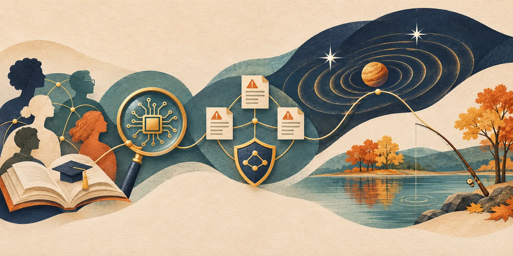

Independent daily digestFive stories worth your time
The Daily Curiosity
Some connections are easy to miss: the mentors behind a doctorate, the evidence behind AI safety, a shared pattern in cyberattacks, a planet hidden in stellar waves, or a library’s route to the water. Today’s five stories make those connections visible.

AI-generated editorial illustration · The Daily Curiosity. Symbolic artwork, not documentary imagery or a scientific diagram.
STORY 01 · Higher education · SUNY
The unwritten rules of a doctorate get a mentoring network
SUNY announced its inaugural First-Generation Doctoral Scholars Consortium on November 10, bringing together 26 doctoral students from eight campuses who are the first in their families to graduate college. The program combines mentoring, community and professional guidance to help participants understand the expectations of doctoral education and build relationships across institutions. It is a concrete new development beyond this week’s First-Generation College Day recognition: support is being organized around the less visible work of learning how an academic career operates.
Source published 2026-11-10 · Briefing date 2026-11-10
New York puts a statewide research network behind AI safety tests
New York launched a statewide AI science and safety effort on November 10 through the Center for AI Responsibility and Research based at Binghamton University. The initiative brings together more than 80 researchers, supported by Empire AI computing, with Cornell Tech’s Greg Morrisett and Columbia’s Jeannette Wing serving as interim co-directors. Its agenda includes independent evaluation of advanced models and development of the measurements needed to test future systems, giving public officials a source of evidence beyond developers’ own assurances. This announcement establishes the research effort and its leadership; it does not report completed safety evaluations or certify any model as safe.
Source published 2026-11-10 · Briefing date 2026-11-10
A better incident form can connect attacks that look unrelated
CISA has updated its cyber-incident reporting questionnaire to collect more detailed information about malware, social engineering, hacking techniques and insider threats, according to its November 9 press release republished by Dark Reading. Questions about observed behavior now use the MITRE ATT&CK framework, giving reports from different organizations a more consistent vocabulary. The practical aim is to connect incidents into emerging campaigns and warn other potential targets, turning a form-design change into a way to improve shared threat intelligence.
Source published 2026-11-09 · Briefing date 2026-11-10
A planet’s gravity could leave a message in a stellar pair’s waves
Two studies described in a November 10 NASA release explore how the future LISA observatory could detect planets orbiting close pairs of white dwarf stars through changes in their gravitational-wave signals. A sufficiently massive planet would make the stellar pair wobble, adding secondary signals around its main gravitational-wave frequency; the researchers also examine how Webb’s infrared observations could help confirm nearby candidates. The approach could open a window on a population of planets that has not yet been observed around binary white dwarfs. These are proposed detection and confirmation methods, not planet discoveries: LISA remains in development, with launch planned for the mid-2030s.
Source published 2026-11-10 · Briefing date 2026-11-10
Tomorrow’s fishing invitation removes the license barrier
New York’s final Free Fishing Day of 2026 falls on Wednesday, November 11, allowing residents and visitors to fish the state’s freshwaters without a freshwater fishing license. The November 6 announcement links the Veterans Day event with opportunities to introduce someone to fishing, while DEC’s event page confirms that all other fishing regulations still apply. The state also points to a fishing-rod lending program at more than 80 libraries, addressing the equipment cost that can remain even when a license is not required.
Source published 2026-11-06 · Briefing date 2026-11-10